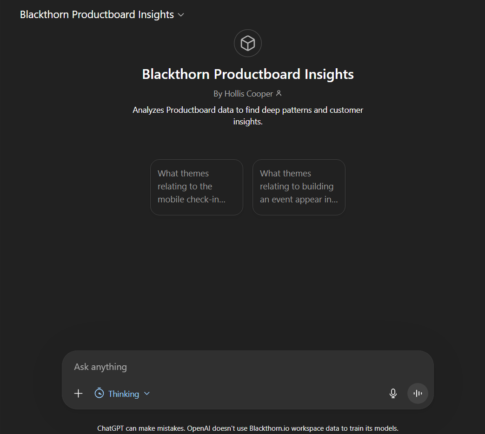

Custom GPT for Customer Insights
Built a custom GPT assistant to analyze customer feedback and uncover hidden pain point themes.
Stack: Custom GPT · Python · Regex · RAG

The Problem
The product team used Productboard to gather customer feedback, but the tool was feature-focused and missed larger themes across insights. Related customer pain points were siloed in separate categories, creating blind spots in our understanding of user needs and making it difficult to identify patterns for roadmap prioritization.
What I Did
- Built a custom GPT assistant that analyzes all customer feedback via CSV export from Productboard
- Wrote Python scripts to extract and clean data from Productboard exports
- Engineered a detailed system prompt with regex patterns and synonym banks for accurate retrieval
- Implemented RAG with our documentation for better context
- Led an enablement workshop for the product team
The Result
- Uncovered 2 major customer pain point themes that were previously invisible to the team
- Product team members reported saving hours per week on insight analysis
- Leadership approved search for enterprise-level tool based on demonstrated value and team adoption